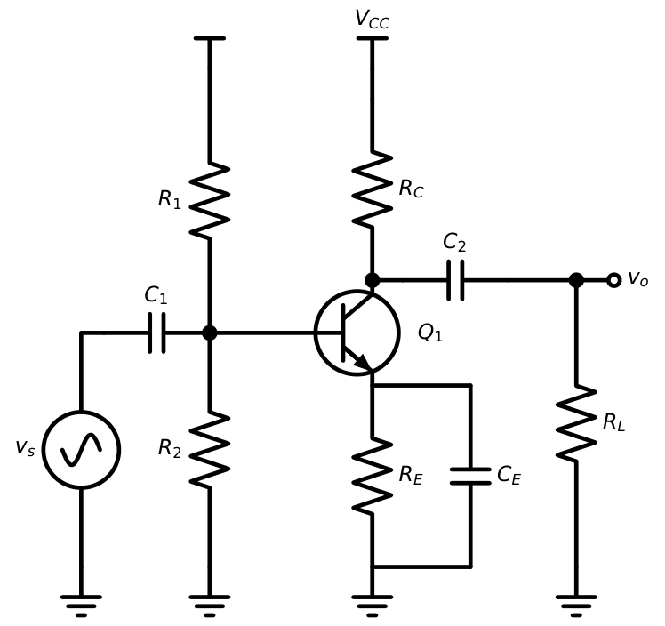
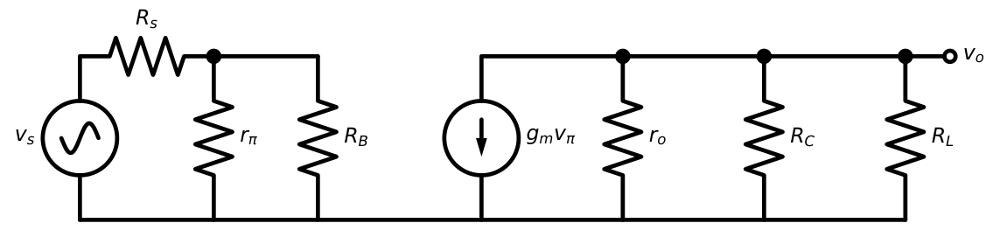
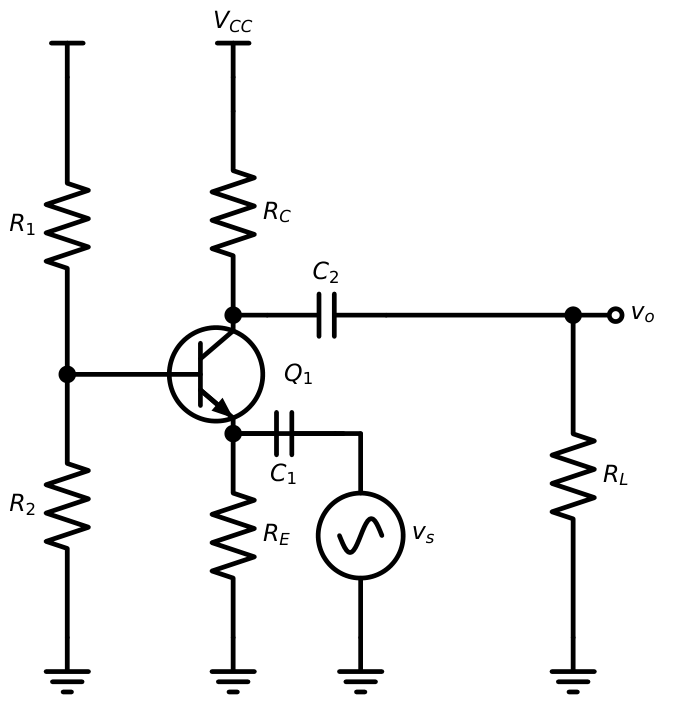
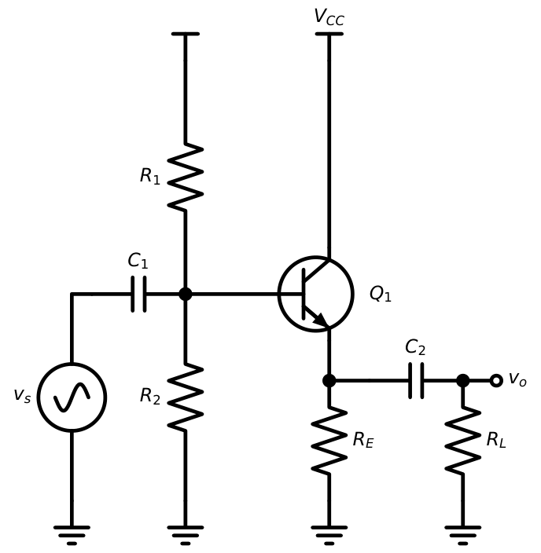
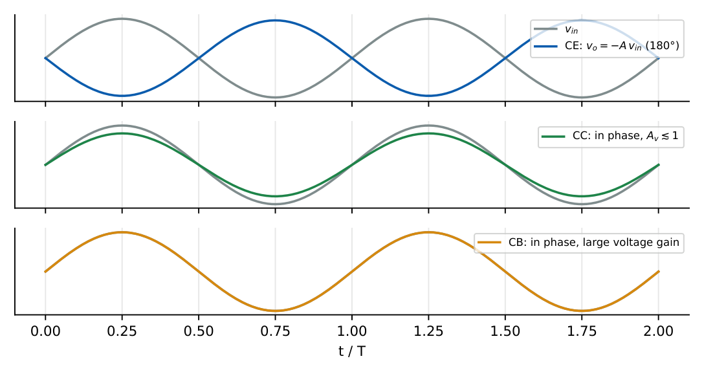
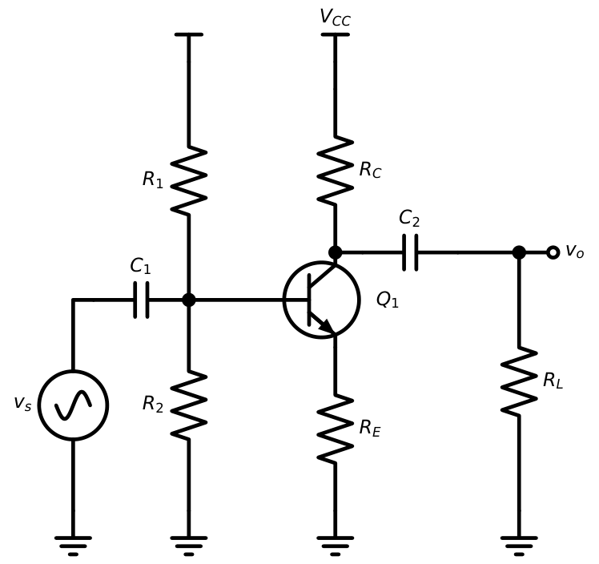
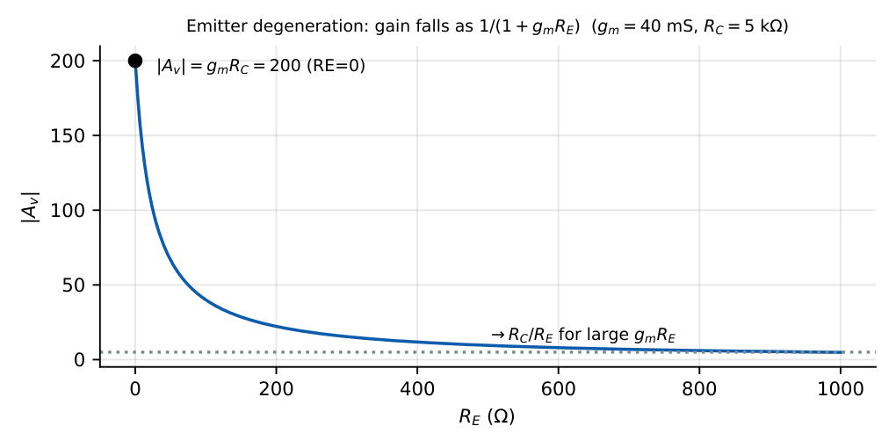

BJT Amplifier Configurations
In this chapter
- 9.1 Common-emitter amplifier
- 9.2 Common-base amplifier
- 9.3 Common-collector amplifier
- 9.4 Voltage gain comparison
- 9.5 Current gain comparison
- 9.6 Input impedance comparison
- 9.7 Output impedance comparison
- 9.8 Phase reversal
- 9.9 Emitter degeneration
- 9.10 Collector degeneration
- 9.11 Cascaded BJT amplifiers
- 9.12 GATE comparison problems
9.1 Common-emitter amplifier

With \(C_E\) shorting \(R_E\) at signal frequencies and \(R_B=R_1\|R_2\):
\(A_v=-g_m(R_C\|R_L\|r_o)\) \(R_{in}=R_B\|r_\pi\) \(R_{out}=R_C\|r_o\approx R_C\)
\(A_i=A_v\dfrac{R_{in}}{R_L}\) Overall from source: \(\dfrac{v_o}{v_s}=A_v\dfrac{R_{in}}{R_{in}+R_s}\)
The bias of Chapter 7 (\(R_1=36\) k, \(R_2=12\) k, \(R_C=3\) k, \(R_E=1\) k, \(\beta=100\), \(V_{CC}=12\) V) gives \(I_C=2.09\) mA. \(g_m=80.4\) mS, \(r_\pi=1.24\) k\(\Omega\), \(r_e=12.3\ \Omega\). Take \(R_L=3\) k\(\Omega\), \(R_s=1\) k\(\Omega\), \(r_o\to\infty\).
\(A_v=-80.4\,\mathrm{mS}\times(3\|3)\,\mathrm k=-121\). \(R_{in}=9\|1.24=1.09\) k\(\Omega\). \(v_o/v_s=-121\times1.09/2.09=-63\). \(R_{out}=3\) k\(\Omega\).

9.2 Common-base amplifier

\(A_v=g_m(R_C\|R_L)\) (non-inverting) \(R_{in}=R_E\|r_e\approx r_e\) \(R_{out}\approx R_C\) \(A_i\approx\alpha\)
\(I_C=1\) mA, \(R_C=5\) k, \(R_L=10\) k. \(g_m=38.5\) mS; \(A_v=38.5\times3.33=128\); \(R_{in}\approx26\ \Omega\); \(A_i\approx0.99\). CB has as much voltage gain as CE but no phase inversion, extremely low \(R_{in}\), and a superb high-frequency response (no Miller effect).
9.3 Common-collector amplifier

Let \(R_L'=R_E\|R_L\) and \(R_s'=R_s\|R_B\).
\(A_v=\dfrac{(\beta+1)R_L'}{r_\pi+(\beta+1)R_L'}=\dfrac{R_L'}{R_L'+r_e}\lesssim1\)
\(R_{in}=R_B\|\big[r_\pi+(\beta+1)R_L'\big]\) \(R_{out}=R_E\left\|\dfrac{r_\pi+R_s'}{\beta+1}\right.\)
\(I_E=2\) mA, \(\beta=100\), \(R_E=R_L=1\) k. \(r_e=13\ \Omega\), \(r_\pi=1.31\) k. \(R_L'=0.5\) k. \(A_v=101\times500/(1313+50500)=0.975\). \(R_{in}=R_B\|51.8\) k (with \(R_B=10\) k gives \(8.4\) k). With \(R_s'=1\) k: \(R_{out}=1\,\mathrm k\|[(1313+1000)/101=22.9\ \Omega]=22.4\ \Omega\). The follower is an excellent buffer.
9.4 Voltage gain comparison
CE and CB both give large gain: \(|A_v|=g_mR_C'\). CC gives \(A_v\lesssim1\) (never above 1).
9.5 Current gain comparison
CE: \(\beta\). CC: \(\beta+1\). CB: \(\alpha<1\).
9.6 Input impedance comparison
CB: \(\approx r_e\) (tens of ohms). CE: \(r_\pi\) (kilohms). CC: \(r_\pi+(\beta+1)R_L'\) (hundreds of kilohms).
9.7 Output impedance comparison
CC: low (tens of ohms). CE: \(\approx R_C\) (kilohms). CB: \(\approx R_C\) (with a very large intrinsic \(r_o\)-like term).
| Property | CE | CB | CC |
|---|---|---|---|
| \(A_v\) | \(-g_mR_C'\) (large) | \(+g_mR_C'\) (large) | \(\approx+1\) |
| \(A_i\) | \(\beta\) | \(\alpha\approx1\) | \(\beta+1\) |
| \(R_{in}\) | medium (\(r_\pi\)) | very low (\(r_e\)) | high |
| \(R_{out}\) | medium (\(R_C\)) | high (to \(R_C\)) | low |
| Phase | \(180^\circ\) | \(0^\circ\) | \(0^\circ\) |
| Bandwidth | Miller-limited | best | good |
| Use | general gain stage | HF, current buffer | voltage buffer |
9.8 Phase reversal
The CE stage inverts because a rising \(v_{be}\) increases \(i_c\), which increases the drop across \(R_C\) and lowers \(v_o\). CB and CC do not invert.

9.9 Emitter degeneration
If \(R_E\) is not bypassed (figure below) it introduces series-series negative feedback.

\(A_v=-\dfrac{\beta(R_C\|R_L)}{r_\pi+(\beta+1)R_E}\approx-\dfrac{\alpha(R_C\|R_L)}{r_e+R_E}\) (with \(r_o\to\infty\))
\(R_{in,base}=r_\pi+(\beta+1)R_E\) \(R_{out}\approx R_C\) \(G_m=\dfrac{g_m}{1+g_mR_E}\)
Gain is now nearly \(-R_C/R_E\), independent of \(\beta\) and temperature, at the cost of gain magnitude; distortion drops and bandwidth rises by \((1+g_mR_E)\).

Same amplifier without \(C_E\): \(r_e=12.3\ \Omega\), \(R_E=1\) k. \(A_v=-1.5\,\mathrm k/(12.3+1000)=-1.48\). \(R_{in,base}=1.24+101=102.2\) k, so \(R_{in}=9\|102.2=8.3\) k\(\Omega\). Gain is 80 times lower but the input resistance is 7.6 times higher.
9.10 Collector degeneration
Two related ideas. (1) A resistance in the collector path of the load (finite \(r_o\)) lowers the gain: \(A_v=-g_m(R_C\|R_L\|r_o)\). (2) A feedback resistor \(R_F\) from collector to base (see collector-to-base bias) reduces the input resistance by the Miller effect: \(R_{in}\approx R_F/(1+|A_v|)\) and lowers gain slightly, but it stabilises the bias and the gain.
\(R_F=100\) k\(\Omega\), \(|A_v|=99\): \(R_{in}=100/100=1\) k\(\Omega\) (seen at the base).
9.11 Cascaded BJT amplifiers
Direct cascade of stages gives \(A_v=A_{v1}A_{v2}\cdots\) once each stage’s gain is computed with the next stage’s input resistance as its load. Useful two-transistor combinations:
- CE–CE: high gain, \(180^\circ\times2=0^\circ\).
- CE–CC: gain plus low output impedance (e.g. driving a low-resistance load).
- Cascode (CE–CB): high gain, high output resistance, small Miller effect \(\Rightarrow\) wide bandwidth.
- Darlington (CC–CC or CC–CE): \(\beta_{tot}\approx\beta_1\beta_2\), \(V_{BE(tot)}\approx1.4\) V.
Stage 1: CE with \(g_{m1}=40\) mS, \(R_{C1}=4\) k; stage 2: CE with \(r_{\pi2}=2.5\) k, \(g_{m2}=40\) mS, \(R_{C2}=4\) k, \(R_L=4\) k. \(A_{v1}=-40\,\mathrm{mS}\times(4\|2.5)\,\mathrm k=-61.5\). \(A_{v2}=-40\,\mathrm{mS}\times2\,\mathrm k=-80\). Total \(=4923=73.8\) dB. (If stage 2’s loading was ignored one would get \(-160\times-80\): wrong by 2.6\(\times\).)
9.12 GATE comparison problems
Q1. Which BJT amplifier has the lowest input resistance? (A) CE (B) CB (C) CC (D) all equal.
Q2. A CE amplifier has \(g_m=40\) mS, \(R_C=2\) k\(\Omega\), unbypassed \(R_E=100\ \Omega\) (ignore \(r_o\), large \(\beta\)). \(A_v=\) .
Q3. An emitter follower has \(r_\pi=1\) k\(\Omega\), \(\beta=99\), \(R_L'=1\) k\(\Omega\). Its voltage gain is .
Q4. The output resistance of an emitter follower with \(\beta=99\), \(r_\pi=1\) k\(\Omega\), \(R_s=1\) k\(\Omega\), \(R_E\to\infty\) is \(\Omega\).
Q5. The amplifier giving \(180^\circ\) phase shift between input and output at midband is (A) CE (B) CB (C) CC (D) none.
Q6. For a CB amplifier with \(I_E=1\) mA, the input resistance (approximately, in \(\Omega\)) is .
Answers: Q1: (B). Q2: \(-\dfrac{40\times2000\cdot10^{-3}}{1+40\times0.1}=-\dfrac{80}{5}=-16\). Q3: \(\dfrac{100\times1}{1+100}=0.99\). Q4: \((1000+1000)/100=20\ \Omega\). Q5: (A). Q6: \(\approx26\ \Omega\).
- Find \(R_{in}\) of a CE stage with \(R_B=10\) k, \(r_\pi=2.5\) k. [2 k\(\Omega\)]
- Voltage gain of an emitter follower with \(R_L'=2\) k, \(r_e=25\ \Omega\). [0.988]
- Cascode of two identical CE/CB stages: what is the low-frequency gain relative to one CE stage? [\(\approx\) same: \(-g_mR_C\); benefit is bandwidth and \(R_{out}\)]
- Why is CC used as the last stage before a low-resistance load? [Low \(R_{out}\), avoids loading the gain stage]